title: Azure REST APIs with Postman’s OAuth 2.0 Provider
categories:
I’ve been blogging and vlogging about Azure REST APIs with Postman for a while now and often get asked why I don’t use Postman’s built in OAuth 2.0 provider. The reason is that when you use the provider you have to manually click the “Get New Access Token” button in Postman to get the token, which isn’t possible when I need to automate the execution of my Postman collections.
If you are fine with clicking that button when your token expires, then this post is for you, if you would like to use the pre-request script that auto-fetches a new token when it expires, then check out my Azure REST APIs with Postman blog.
Here’s how to use Postman’s OAuth2 provider with Azure REST APIs.
Before we go too far into this Azure REST APIs with Postman OAuth 2.0 edition blog post, I want to make sure that you know you don’t need to use the Azure REST APIs to interact with Azure resources. So many people have reached out to me over the years asking for Azure REST help who didn’t know we have SDKs in many languages, including .NET, Python, Java, JavaScript/TypeScript, Go, C++, C, Android, iOS, PHP, and Ruby - and that they work across operating systems - and are available in their favorite package managers. In my opinion, if you don’t mind taking on the dependency of the Microsoft supported library, then it sure beats building the libraries yourself. Also, the new Azure SDKs include features like logging, retries, and are fully supported by a sizable team at Microsoft.
I understand if you want to use the REST APIs directly, but I just want you to know that the libraries exist as well.
You can find the libraries here: https://azure.com/sdk and a 3 min “Introducing the Azure SDKs” video here: https://aka.ms/azsdk/intro and all the source for the libraries can be found here: https://github.com/azure/azure-sdk
Postman is a tool that enables you to call the Azure REST APIs via a graphical interface. You can install it here: Download Postman. We are using Postman v8.0.5 for this post.
The Azure CLI is a command line tool that allows you to manage and interact with Azure resources, including the ability to get the necessary accounts and tokens required to call the Azure REST APIs. We’ll use it to create a service principal, which will be used to get the tokens we need to make Azure REST API requests.
You can either use the Azure Cloud Shell or install the Azure CLI locally.
The Azure Cloud shell is an in-browser terminal interface that allows you to execute Azure CLI commands without installing the Azure CLI locally.
az loginaz account set -n {name of your sub}Azure REST API authentication is done via a Bearer token in the Authentication header. We’ll use a service principal to get that token for us. A service principal is an Azure account that allows you to perform actions on Azure resources. Think about it like a system account that you can assign roles to and get tokens with. You can optionally read all about Service Principals here: Applications and service principals. Note that there are other ways to authenticate with the Azure REST APIs, but in this post we will only cover the Bearer token and service principal approach. You can research all the various ways to authenticate with the Azure REST APIs here: Azure REST API Authentication.
We first need to create the service principal with the following Azure CLI command:
az ad sp create-for-rbac
This will output the information you need to setup Postman - you will need it later, so save it to a safe location.
{
"appId": "798256c4-bbdc-4f7a-a20a-",
"displayName": "azure-cli-2021-02-10-22-47-08",
"name": "http://azure-cli-2021-02-10-22-47-08",
"password": "",
"tenant": "72f988bf-86f1-41af-91ab-"
}
Now that we have the service principal created, it is time to configure Postman.
I created this sample collection to help you get started. Click on the following “Run in Postman” button to open that collection.

Here’s the direct link, just in case that button doesn’t work for you: https://app.getpostman.com/run-collection/f7a84bebc6c08df804ec
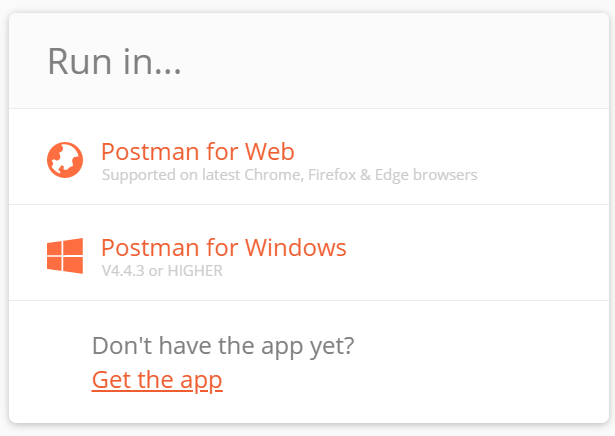
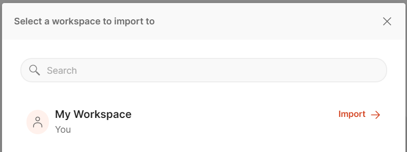
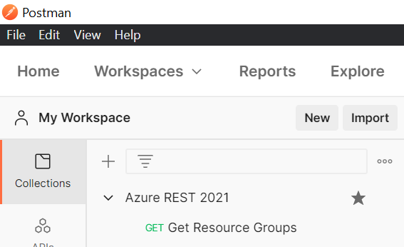
Postman allows you to set variables at various levels, you can read all about variables and scopes here: Postman: Using variables. In this example, we’ll use “Collection level” variables.
Click on the collection name, and then click on the “Variables” tab, you’ll see the variables that need to be set in order to get the token for each Azure REST API call.

Go through and set each of these variables based on the “Notes” column below.
| Variable Name | Current Value | Notes |
|---|---|---|
| clientId | This is the value of appId from the service principal creation output above. |
|
| clientSecret | This is the value of password from the service principal creation output above. |
|
| tenantId | This is the value of tenantId from the service principal creation output above. |
|
| subscriptionId | You can get this with this Azure CLI command az account show --query id -o tsv |
|
| scope | https://management.azure.com/.default |
The default value is for managing Azure resources. |
| accessTokenUrl | https://login.microsoftonline.com/{% raw %}{{tenantId}}{% endraw %}/oauth2/v2.0/token |
You shouldn’t need to change this. |
VERY IMPORTANT: Make sure you click the “Save” button after you have set all your variables!
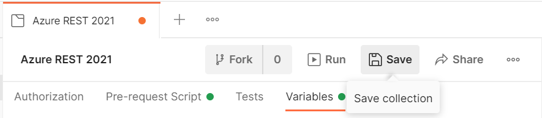
Click on the Authorization tab and ensure that the following is set correctly:
Type: OAuth 2.0
Add auth data to: Request Headers
Header Prefix: Bearer
Configure New Token:
- Token Name: Bearer
- Grant Type: Client Credentials
- Access Token URL: {% raw %}{{tenantId}}{% endraw %}
- Client ID: {% raw %}{{tenantId}}{% endraw %}
- Client Secret: {% raw %}{{tenantId}}{% endraw %}
- Scope: {% raw %}{{tenantId}}{% endraw %}
- Client Authentication: Send client credentials in body
It is now time to execute our first request. I included a sample “Get Resource Groups” request in the collection.

Click on that request, and then click the blue “Send” button.
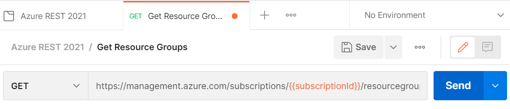
You will then see the output of all your resources groups in the response pane.
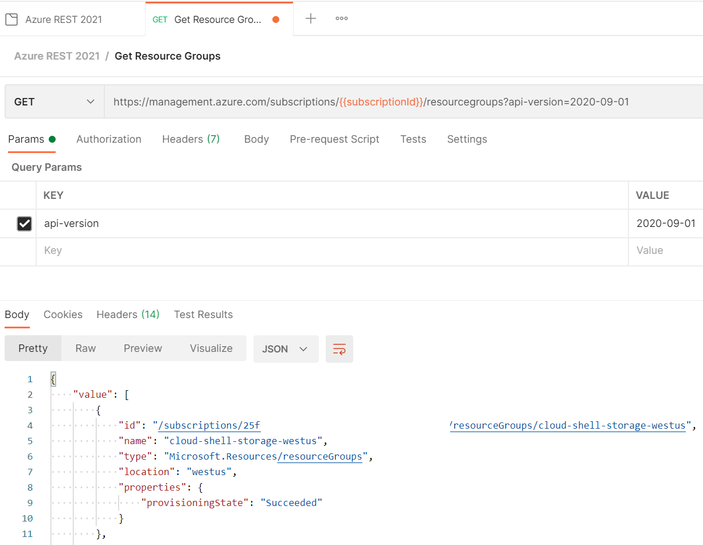
You just saw how we can execute a simple GET request. Here’s how to do a PUT to create a resource group. You can find the full docs for the Resource Group, and all the other Azure REST APIs here: Resource Groups - Create Or Update
Click on the “Create Resource Group” request.
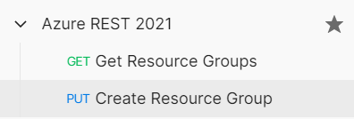
You will notice that we change the HTTP VERB to PUT and added the resource group name to the URL.
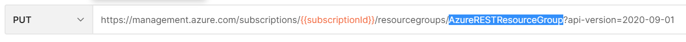
We also added a body to supply the location, which is required for this request.
In order to set the body you need to do the following:
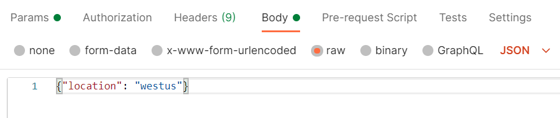
{"location": "westus"}
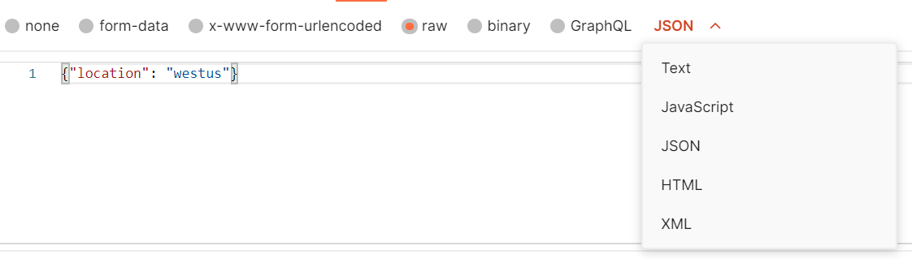
All parameters for all requests can be found in the Azure REST documentation.
Now you can click the blue “Send” button and then see the output in the response output pane:
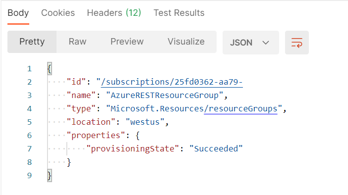
That’s my Azure REST with Postman 2021 update. I hope you found this helpful. Please leave a comment and share with your friends.
Thanks,
Jon